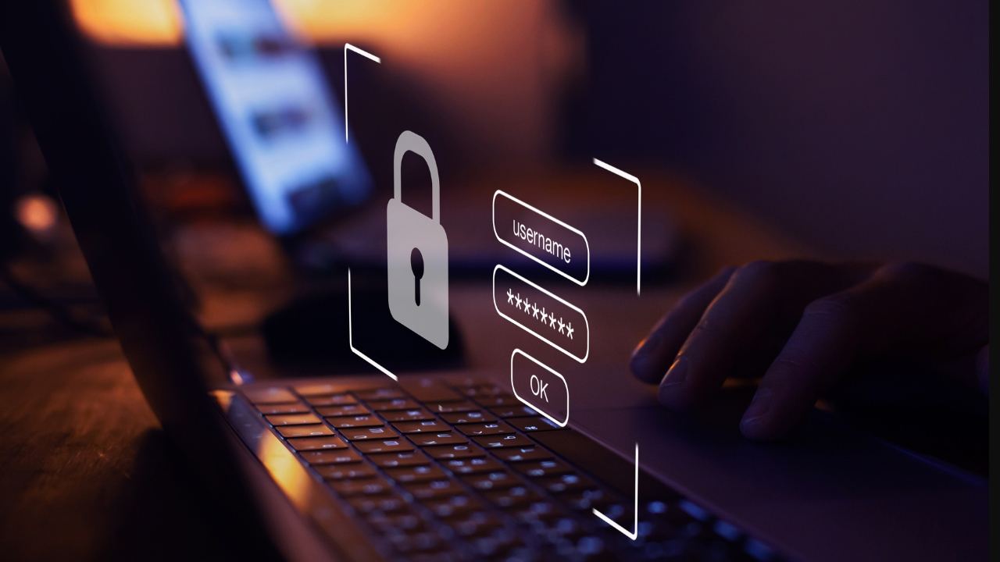

In today's digital economy, two concepts are non-negotiable for business survival and growth: data and cyber security. While many focus on sales and marketing, the integrity of customer information and the systems that protect it form the true foundation of any modern enterprise. Understanding these twin priorities is crucial for both businesses and the customers they serve.
What Is Data in Business, and Why Is It Valuable?
Many people simplify business data as just customer names, but its scope is far wider. Data is all the information a business collects about its customers, which includes names, purchase history, browsing activity, interests, and even locations. This massive collection of information is often referred to as "the new oil" because of its immense value. Businesses don't just collect data for the sake of it; they strategically use it to refine their products, personalize marketing campaigns, and gain a profound understanding of customer behavior. Ultimately, better data leads to better decision-making and a superior customer experience.
The Critical Imperative of Cyber Security
As the volume of data grows, so do the risks. The digital landscape is fraught with threats like hackers, scams, phishing emails, and fake websites, all poised to steal sensitive personal information. This is why cyber security is no longer optional—it is a critical business imperative. A single, successful cyberattack can cost a company millions in damages, regulatory fines, or, worse, completely destroy its reputation and customer trust. To defend against these threats, businesses must implement rigorous safeguards, including strong passwords, two-factor authentication, firewalls, regular data backups, and continuous employee training on security best practices.
Simple Habits for Personal Data Protection
While businesses bear the primary responsibility for securing their platforms, personal vigilance remains a crucial
defense layer. Individuals must adopt simple, effective habits to protect their own information. This starts with
avoiding the urge to click on unknown or suspicious links and always taking the time to check the legitimacy of a
website before entering any information. It also means using strong, unique passwords for all accounts, never oversharing
personal details online, and regularly updating all apps and software. These straightforward practices act as a strong
personal firewall, preventing small lapses in judgment from escalating into major data problems.
In conclusion,
data is the engine of modern business, providing the intelligence needed for growth, and cyber security is the shield
that protects that engine. Prioritizing both is essential for businesses looking to thrive and maintain trust in the
fast-paced, digitally connected world.